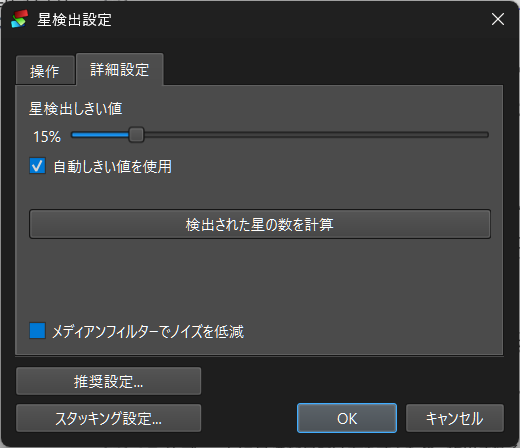
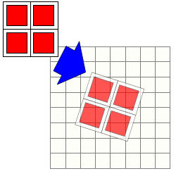
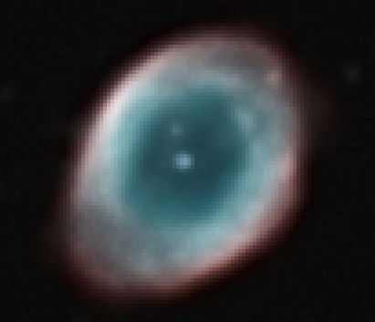
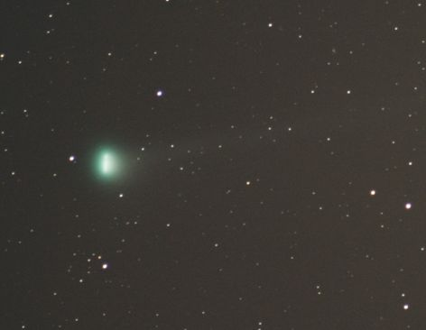
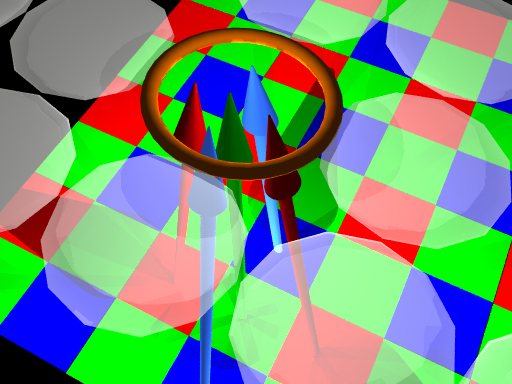
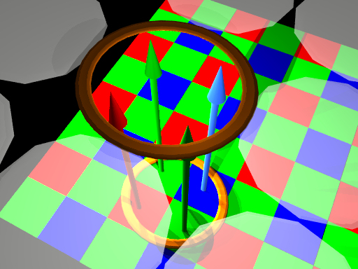
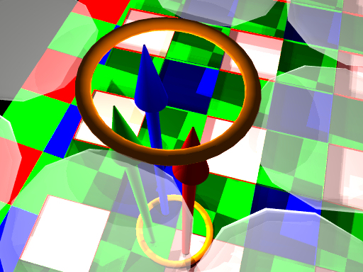

技術的な詳細
登録
位置合わせ
ファイルグループ
スタッキング
スタッキング手法
Drizzle
彗星スタッキング
RAW画像の現像プロセス
星の検出
DeepSkyStackerは、各画像から星を自動的に検出しようとします。簡単に言うと、DeepSkyStackerは、すべての方向に向かって輝度が規則的に減少し、半径が50ピクセル以下の丸いオブジェクトを星とみなします。赤道儀の追尾が正しく行われていない場合に発生する可能性のある、細長くなった星の画像は除外されることに注意してください。星が検出されると、輝度にガウス曲線を当てはめることによって、星の正確な中心が計算されます。
DeepSkyStackerは、すべてのライトフレーム間で共通する星を少なくとも8個含んでいる画像のみをスタッキングします。実際の運用においては、すべてのライトフレーム間で8個の共通する星を見つけられる可能性を高めるために、DeepSkyStackerが20個以上の星を検出するように、[Settings...]（設定...）/ [Register Settings]（登録設定）または [Register checked pictures]（チェックした画像の登録）/ [Register Settings]（登録設定）/ [Advanced]（詳細）ダイアログで星検出のしきい値（Star Detection Threshold）を設定する必要があります。
登録前のダーク、フラット、オフセットの適用
ダーク、フラット、および/またはオフセットフレームにチェックが入っている場合、それらは登録処理の前に自動的に適用されます。
多くのホットピクセルを含むライトフレームがある場合、位置合わせを大きく乱す可能性のある誤った星の検出を避けるために、ダークフレームにチェックを入れることを強くお勧めします。
ホットピクセルの自動検出
オプションで、DeepSkyStackerは誤った星の識別を避けるために、登録処理中にホットピクセルの検出を試みます。
このオプションは、モノクロ画像、およびスーパーピクセル、Bayer.Drizzle、バイリニア（双線形）、AHD補間モードのRAW画像でのみ機能することに注意してください。
星検出のしきい値の調整
星検出のしきい値はデフォルトで10%（最大輝度の10%）です。
| このしきい値は、「チェックした画像の登録/登録設定」ダイアログの「詳細」タブ、または Settings.../登録設定 を選択して（自動しきい値が選択されていない場合）変更できます。
星検出のしきい値を小さくすると, DeepSkyStackerはより多くの（より暗い）星を見つけるようになります. 逆に, しきい値を大きくすると, より明るい星だけが検出されるようになり, 検出される星の数は減ります. 検出のしきい値を低く設定しても、画像が露出不足のためにDeepSkyStackerが十分な数の星を見つけられない場合は、RAW/FITS DDP設定の「明るさ（Brightness）」調整を使用して画像の明るさを上げることができます。 画像にノイズが多い（例：光害の結果）場合、「メディアンフィルターを使用してノイズを低減する（Reduce the noise by using a Median Filter）」オプションを有効にする必要がある場合があります。 ライトフレームに最適な見つけ方をするため、検出される星の数を計算できます。これを行うために、DeepSkyStackerは最初のチェック済みライトフレームを使用し、一時的にホットピクセル検出を有効にします。 この数はあくまで目安であり、ダーク、オフセット、フラットフレームにチェックを入れている場合、検出される実際の数は異なる可能性があることに注意してください。 「自動しきい値を使用する（Use automatic threshold）」を選択すると、DeepSkyStackerは最適化アルゴリズムを使用して適切な検出を決定しようとします。 これにより、「星検出のしきい値」を手動で調整する必要がなくなります。 最初の画像で計算されたしきい値は、後続の画像の最適なしきい値を見つけるための開始点として使用されます。すでにリファレンスフレームが選択されている場合は、この画像が最初に登録する画像として使用されます。 |
 |
登録結果
登録結果（検出された星の数、各星の位置、輝度）は、画像ファイル名に拡張子 `.Info.txt` を付けたテキストファイルに保存されます。
したがって、将来のスタッキングプロセスで画像を再登録する必要はありません。
登録結果とパラメータ
登録結果は、選択したパラメータ（特にRAW現像パラメータ）に大きく依存します。
これらのパラメータが変更された場合は、画像を再登録する必要があります。
登録後のスタッキング
DeepSkyStackerは、登録プロセスとスタッキングプロセスを連鎖させることができます。スタッキングプロセスを開始するには、登録プロセスの終了時に維持したい画像の割合（パーセンテージ）を指定するだけです。スタッキングプロセスでは、最も優れた画像のみが使用されます。
これにより、全プロセスを開始したまま就寝し, 翌朝に最初の結果を確認することができます.
位置合わせ
オフセットと角度の計算
位置合わせプロセス中、コンテキストメニューを使用して別のリファレンスフレームを選択しない限り、最も優れた画像（スコアが最も高い画像）がリファレンスフレームとして使用されます。
すべてのオフセットと回転角度は、このリファレンスフレームを基準にして計算されます。
オフセットと回転角度は、フレーム内の星のパターンを識別することによって計算されます。
簡単に言うと、このアルゴリズムは、辺の距離（したがって辺の間の角度）が最も近い最大の三角形を探します。
そのような三角形がリファレンスフレームと位置合わせされるフレーム間で十分な数検出されると、オフセットと回転が計算され、最小二乗法を使用して検証されます。
星の数に応じて、バイサクエアード（bisquared）またはバイリニア（bilinear）変換が使用されます。
DeepSkyStackerで使用されているアルゴリズムの基になったアルゴリズムの詳細については、次のサイトを参照してください：
FOCAS 自動カタログ照合アルゴリズム
差分投票およびメディアン変換の導出によるパターンマッチング
以前に計算されたオフセットと角度の自動使用
DeepSkyStackerは、リファレンスライトフレームと他のすべてのライトフレーム間のすべての変換を保存しているため、登録情報が変更されていない場合は、再度計算する必要はありません。
この情報は、リファレンスフレームと同じ名前（および同じフォルダ内）の拡張子 `.stackinfo.txt` のファイルに保存されます。
ファイルグループ
ファイルグループは、同じ対象物に対する複数夜にわたる撮影セッションのファイルを論理的にグループ化することで、ファイル管理を簡素化するために使用できます。
「メイングループ（Main Group）」のみを使用する場合、DeepSkyStackerはファイルグループが導入される前とまったく同じように動作します。
ファイルグループには、メイングループと他のすべてのグループの2種類があります。
メイングループのライトフレームは、メイングループのダーク、フラット、およびオフセット/バイアスフレームとのみ関連付けることができます。
这是、ファイルグループ導入前のDeepSkyStackerの動作と同じです。
メイングループのダーク、フラット、およびオフセット/バイアスフレームは、任意のグループのライトフレームに関連付けることができます。
他のグループのダーク、フラット、およびオフセット/バイアスフレームは、同じグループのライトフレームとのみ関連付けることができます。
ファイルは1つのファイルグループにのみ属することができるという点に注意して、必要なだけファイルグループを作成できます。
DeepSkyStackerを起動したときは、メイングループのみが利用可能です。最後の利用可能なグループにファイルを追加するとすぐに、新しい空のグループタブが作成されます。
例:
2夜連続で同じ対象を撮影しました。
各夜にライト、ダーク、フラットフレームのセットがありますが、毎晩温度が同じではなく、ダークフレームの互換性がなく、また向きもわずかに異なるため、2晩でフラットフレームも異なります。
各ライトフレームを正しいダークおよびフラットフレームに関連付けるには、最初の夜のすべてのライト+ダーク+フラットフレームを1つのファイルグループに配置し、2番目の夜のすべてのライト+ダーク+フラットフレームを別のファイルグループに配置するだけです。
オフセット/バイアスフレームは全日程に共通するため、メイングループに配置する必要があります。
DeepSkyStackerは、初日のライトフレームを初日のダークおよびフラットフレームに、2日目のライトフレームを2日目のダークおよびフラットフレームに自動的に関連付けます。
メイングループのオフセット/バイアスフレームは、1晩目と2晩目の両方のライトフレームに関連付けられます。
スタッキング
背景
キャリブレーション
背景キャリブレーションは、スタッキングする前に各画像の背景値を正規化する処理です。
背景値は、画像のすべてのピクセルのメディアン値として定義されます。
2つのオプションが用意されています。
「チャンネルごとの背景キャリブレーション（Per Channel Background Calibration）」オプションを使用すると、各チャンネルの背景がリファレンスフレームの背景に合わせて個別に調整されます。
「RGBチャンネルキャリブレーション（RGB Channels Calibration）」オプションを使用すると、各ライトフレームの赤、緑、青の3つのチャンネルが同じ背景値に正規化されます。この背景値は、リファレンスフレームから計算された3つのメディアン値（各チャンネルに1つ）のうちの最小値です。このオプションは、スタッキングの観点から互換性のある画像を作成するだけでなく、ニュートラルな灰色の背景を作成します。副作用として、スタッキングされた画像の全体的な彩度がかなり低くなります（グレースケールのような見た目になります）。
Kappa-Sigma Clipping（カッパシグマクリッピング）または Kappa-Sigma Clipping Median（カッパシグマクリッピングメディアン）メソッドを使用する場合は、スタッキングする画像の背景値がすべて同じであることを確認するために、これらのオプションのいずれかにチェックを入れることが重要です。
フラットフレームの自動キャリブレーション
フラットフレームの自動キャリブレーションの目的は、フラットフレームをマスターフラットに結合する前に、フラットフレーム間の光量の違いを均一化することです。
最初のフラットフレームがリファレンスとして使用されます。他のフラットフレームは、最初のフラットフレームの平均輝度とダイナミックレンジに合わせて正規化されます。
ホットピクセルの自動検出と除去
ホットピクセルの自動検出と除去の目的は、ホットピクセルを隣接するピクセルから計算された値で置き換えることです。
まず、非常に明るいホットピクセルは、ダークフレーム（または利用可能な場合はマスターダークフレーム）の分析によって識別されます。値が[メディアン] + 16 x [標準偏差]（シグマ）より大きいすべてのピクセルは、ホットピクセルとしてマークされます。
これらすべてのピクセルについて、キャリブレーションされた画像（オフセット/バイアス減算、ダーク減算、およびフラット除算の後）の値は、隣接するピクセルから補間されます。
不良列（バッドカラム）の自動検出と除去
一部のモノクロCCDチップでは、ホットピクセルによって発生したブルーミングのため、特定の列が完全に死んでいるか、完全に飽和している場合があります。
このような場合、不良列の検出と除去を使用できます。
これは、飽和しているか完全に死んでいる1ピクセル幅の垂直線を自動的に検出し、隣接するピクセルから値を補間することによって、これらの線をホットピクセルであるかのように処理します。
エントロピーベースのダークフレーム減算
ダーク減算は、ダークフレームに0から1の係数を適用することによって、結果として得られる画像（ライトフレームからダークフレームを引いたもの）のエントロピーが最小化されるように、オプションで最適化できます。
この最適化の主な目的は、最適な条件（特に温度に関して）で撮影されていないダークフレームを使用できるようにすることです。
この方法の詳細については、次のドキュメントを参照してください：
エントロピーベースのダークフレーム減算
スタッキングプロセス
DeepSkyStackerのスタッキングプロセスは非常に標準的なものです。
ステップ 1
すべてのオフセットフレームからのマスターオフセットの作成（選択したメソッドを使用）。
複数のオフセットフレームにチェックが入っている場合、マスターオフセットは MasterOffset_ISOxxx.tif（TIFF 8、16、または32ビット）として、最初のオフセットフレームのフォルダ内に作成されます。
このファイルは、次回以降の単一のオフセットフレームとして使用できます。
ステップ 2
すべてのダークフレームからのマスターダークの作成（選択したメソッドを使用）。マスターオフセットが各ダークフレームから減算されます。
複数のダークフレームにチェックが入っている場合、マスターダークは MasterDark_ISOxxx_yyys.tif（TIFF 8、16、または32ビット）として、最初のダークフレームのフォルダ内に作成されます。
このファイルは、次回以降の単一のダークフレームとして使用できます。
すべてのダークフラットフレームからのマスターダークフラットの作成（選択したメソッドを使用）。マスターオフセットが各ダークフラットフレームから減算されます。
複数のダークフラットフレームにチェックが入っている場合、マスターダークフラットは MasterDarkFlat_ISOxxx_yyys.tif（TIFF 8、16、または32ビット）として、最初のダークフラットフレームのフォルダ内に作成されます。
このファイルは、次回以降の単一のダークフラットフレームとして使用できます。
ステップ 3
すべてのフラットフレームからのマスターフラットの作成（選択したメソッドを使用）。マスターオフセットおよびダークフラットが各フラットフレームから減算されます。マスターフラットは自動的にキャリブレーションされます。
複数のフラットフレームにチェックが入っている場合、マスターフラットは MasterFlat_ISOxxx.tif（TIFF 8、16、または32ビット）として、最初のフラットフレームのフォルダ内に作成されます。
このファイルは、次回以降の単一のフラットフレームとして使用できます。
ステップ 4
スタッキングされるすべてのライトフレームのすべてのオフセットと回転角度の計算。
ステップ 5
選択したメソッドを使用してすべてのライトフレームを加算し、最終的な画像を作成します。
マスターオフセットとマスターダークは各ライトフレームから自動的に減算され、結果はキャリブレーションされたマスターフラットで除算されます。その後、オプションが有効になっている場合は、ダークフレームで検出されたホットピクセルが除去され、隣接するピクセルからの値で補間されます。
ステップ 6
Bayer drizzle（ベイヤードリズル）が有効になっている場合、情報の欠落を防ぐために3つのRGBコンポーネントが正規化されます。
ステップ 7
デフォルトでは、結果の画像は自動的に AutoSave.tif ファイルとして保存され、最初のライトフレームのフォルダに作成されます。
RGBチャンネルの調整
このオプションが有効になっている場合、DeepSkyStackerは3つのチャンネルを位置合わせして、結果の画像のチャンネル間の色ずれを低減しようとします。
目に見える主な効果は、星が片側で赤く、もう一方で青く見えなくなることです。
各チャンネルが登録（星が検出）され、最適なチャンネルと他の2つのチャンネルとの間で変換が計算されます。
その後、この変換が2つのチャンネルに適用され、最適なチャンネルに位置合わせされます。
以前に作成されたマスターファイルの自動使用
ファイルのリストから作成された既存のマスターファイル（ダーク、バイアス、フラット、ダークフラット）は、以下の条件が満たされている限り、可能な限り自動的に使用されます。
- 作成に使用されたファイルのリストが変更されていないこと。
- 作成に使用された設定が変更されていないこと。これには、結合方法やパラメータ、およびRAWまたはFITSファイルを使用する場合のRAWまたはFITS DDP設定が含まれます。
パラメータとマスター画像の作成に使用されたファイルのリストを含むテキストファイルが、マスターファイルのフォルダに保存されます。
ファイル名は、マスターファイル名に拡張子 `.Description.txt` を付けたものです。
説明が新しい設定と一致しない場合、マスターファイルは自動的に再作成されます。
この機能はユーザーにとって透過的であり、マスターファイルを再度作成する必要がないため、より高速な処理が可能になります。
カスタム長方形の使用
DeepSkyStackerにカスタム長方形を使用するように指示することができ、これにより結果画像のサイズと位置を定義できます。
まず、リスト内の画像をクリックしてプレビューする必要があります。どの画像でも選択できますが、最終的な画像で表示される範囲を定義するため、リファレンスライトフレーム（スコアが最も高い画像、またはコンテキストメニューを使用してリファレンスライトフレームとして使用することを決定した画像）を選択する必要があります。
次に、画像上でカスタム長方形として使用したい長方形を選択します。
スタッキングプロセスを開始すると、作成した長方形がデフォルトでスタッキングモードとして選択されます。
このオプションは、スタッキングプロセス中にさらに多くのメモリとディスクスペースを使用し、結果画像のサイズを2倍または3倍にするDrizzleオプションと併用する場合に非常に役立ちます。
実際、カスタム長方形を使用すると、DeepSkyStackerはカスタム長方形サイズの画像を作成するために必要なメモリとディスクスペースのみを使用します。
スタッキング手法
平均（Average）
これは最も単純なメソッドです。スタック内のすべてのピクセルの平均値が、各ピクセルごとに計算されます。
メディアン（Median）
これは、マスターダーク、フラット、およびオフセット/バイアスを作成する際に使用されるデフォルトのメソッドです。スタック内のピクセルのメディアン値が、各ピクセルごとに計算されます。
最大値（Maximum）
これは非常に単純なメソッドですが、細心の注意を払って使用する必要があります。スタック内のすべてのピクセルの最大値が、各ピクセルごとに計算されます。
キャリブレーションされたすべての画像の欠陥を表示して、スタックのどこに問題があるかを見つけるのに役立つ場合があります。
カッパ・シグマクリッピング（Kappa-Sigma Clipping）
このメソッドは、異常なピクセルを反復的に除去するために使用されます。
反復回数と使用する標準偏差乗数（カッパ）の2つのパラメータが使用されます。
各反復において、スタック内のピクセルの平均と標準偏差（シグマ）が計算されます。
平均からの距離が平均 + カッパ * シグマを超えている各ピクセルが除外されます。
スタック内の残りのピクセルの平均値が各ピクセルごとに計算されます。
メディアン・カッパ・シグマクリッピング（Median Kappa-Sigma Clipping）
このメソッドはカッパ・シグマクリッピングメソッドに似ていますが、ピクセル値を除外する代わりに、メディアン値に置き換えられます。
自動適応加重平均（Auto Adaptive Weighted Average）
この加重平均は、Dr. Peter B. Stetsonの研究から適応されたものです（The Techniques of Least Squares and Stellar Photometry with CCDs - Peter B. Stetson 1989を参照）。
このメソッドは、標準偏差に対する平均からの偏差に基づいて各ピクセルの重みを反復的に計算することによって、堅牢な平均値を計算します。
エントロピー加重平均（ハイダイナミックレンジ）（Entropy Weighted Average (High Dynamic Range)）
このメソッドは、German, Jenkin, Lesperanceの研究（Entropy-Based image merging - 2005を参照）に基づいており、各ピクセルで最高のダイナミックレンジを維持しながら画像をスタッキングするために使用されます。
異なる露出時間やISO感度で撮影された画像をスタッキングする場合に特に役立ち、可能な限り最高のダイナミックレンジを持つ平均画像を作成します。簡単に言うと、銀河や星雲の中心部が白飛びするのを防ぎます。
注：このメソッドは非常に多くのCPUとメモリを消費します。
Drizzle（ドリズル）
Drizzleは、ハッブル宇宙望遠鏡によるハッブル・ディープ・フィールド観測のためにNASAによって開発されたメソッドです。
このアルゴリズムは、可変ピクセル線形再構成（Variable Pixel Linear Reconstruction）としても知られています。
用途は幅広く、画像の特性（色、明るさ）を維持しながら、単一の画像の解像度と比較してスタック画像の解像度を向上させるために使用できます。
|
基本的に、各画像はスタッキングされる直前にスーパーサンプリング（2倍または3倍など、任意の拡大率）され、より細かいピクセルグリッド上に投影されます（DeepSkyStackerは一般的な値である2または3のみを提案しています）。 |
 |
|
Drizzleオプションを使用する必要があるものとタイミング |
 M57 - No Drizzle |
Drizzleの副作用
主な副作用は、Drizzle処理された画像を作成および処理するために必要なメモリとディスク容量が、Drizzle係数の2乗に比例して乗算されることです。もちろん、このような画像の作成に必要な時間もはるかに長くなります。
たとえば、3000x2000ピクセルの画像で2x Drizzleを使用すると、6000x4000ピクセルの画像が作成され、4倍のメモリとディスクサイズが必要となり、作成にかなり時間がかかります。
3x Drizzleオプションを使用すると、すべてが9倍（3の2乗）になります。非常に強力なマシンと大量のメモリ、ディスク容量がない限り、標準的なDSLR画像にはこれを使用しないことをお勧めします。
コメットスタッキング（Comet Stacking）
彗星は動きの速い天体であり、彗星の画像を一緒にスタッキングすると、次の2つのことが起こる可能性があります。
- 画像間の位置合わせに星を使用した場合、彗星がぼやける
- 画像間の位置合わせに彗星を使用した場合、星が軌跡を描く
バージョン3.0以降、DeepSkyStackerには2つのコメットスタッキングオプションが追加されています。
- 彗星に合わせて位置合わせされた画像を作成する（星に軌跡が残ります）
- 彗星と星の両方に合わせて位置合わせされた画像を作成する（星に軌跡は残りません）。
さまざまなスタッキングモードの例を以下に示します（結果を確認するにはテキストの上にマウスを置きます）
|
コメットスタッキング：星の軌跡
|
 |
星に画像を位置合わせする予定の場合、以下の段落で説明されている操作はデフォルトの動作であるため、行う必要はありません。
時間的に大きく離れた2つのライトフレーム（理想的には時系列で最初のライトフレームと最後のライトフレーム）で彗星の中心位置をマークします。
追加のライトフレームで彗星の中心をマークすることで、結果が向上する可能性があります。
|
ヒント （DSLRや一部のCCDカメラを使用する場合のように）画像の撮影日時が正確な場合は、日時で画像を並べ替え、最初のライトフレーム、最後のライトフレーム、およびリファレンスフレーム（コンテキストメニューを使用して他のフレームを指定していない場合は、スコアが最も高いフレーム）にのみ彗星の位置を設定することができます。 DeepSkyStackerは、（スタッキングの直前に）彗星の中心が設定されていない時間枠のすべてのライトフレームにおいて、彗星の中心位置を自動的に計算します。 これを行うには、最初の画像と各画像の間で経過した時間を使用して彗星の位置を補間します。 |
ステップ2：スタッキングモードを選択する
これは、スタッキングパラメータダイアログで利用可能なComet（コメット）タブで行います。
Cometタブは、少なくとも2つのライトフレーム（リファレンスライトフレームを含む）に登録された彗星がある場合にのみ使用できます。
このタブから、利用可能な3つのコメットスタッキングオプションのいずれかを選択できます。
コメット画像と非コメット画像の混在
DeepSkyStackerは、彗星が登録された画像と彗星が登録されていない画像を同じスタックで使用できます。
これは、特に微かな背景の細部（例えば、銀河や星雲の近くを通過する彗星など）において、結果画像の信号対雑音比（S/N比）を向上させるために非常に役立ちます。
使用すべきスタッキングメソッド
星の軌跡がある画像を作成したい場合は、平均（Average）が最適なメソッドです。
それ以外の場合は、スタック数が少ない場合はメディアン（Median）スタッキングを、スタック数が多い場合はカッパ・シグマクリッピング（kappa-sigma）を使用してください。
期待できる結果
明らかに最も高度なアルゴリズムは、星を固定する効果をもたらすComet and Starsスタッキングです。
ゆっくりと動く彗星は、検出が困難な大きな天体や大きな星になり、このような場合、彗星抽出プロセスが完璧ではない可能性があります。
いずれの場合も、彗星のない同じ領域の一連の画像を（前日または翌日に）撮影すると、最終的な画像の見た目が大幅に向上します。
RAW画像の現像プロセス
RAWファイルのデコード
DSLRによって作成されたRAWファイルは、Dave CoffinによるオリジナルのDCRawをベースにしたLibRaw（Copyright © 2008-2019 LibRaw LLC）を使用してデコードされます。
DeepSkyStackerはリリース時に利用可能な最新バージョンのLibRawを使用しており、カメラがサポートされていない場合は警告を表示します。
RAWファイルの現像プロセス
ファイルはデジタルネガと同等です。そのため、各RAWファイルには現像プロセスが必要です。
RAWファイルには2種類あります。Bayer（ベイヤー）行列を使用するもの（ほとんどがこれに該当します）と、Bayer行列を使用しないもの（例えば、Foveonチップを使用するもの）です。
以下の説明では、Bayer行列ベースのDSLRによって作成されたRAWファイルのみを対象とします。
Bayer行列
まず、Bayer行列とは何かについて簡単に復習しておきます。
8メガピクセルのDSLRを使用する場合、CMOSまたはCCDチップは8メガピクセルの白黒チップであり、その上にBayer行列が貼り付けられています。これは実際には、各ピクセルの前面にあるRGBGまたはCYMKフィルターのパターンです（他のパターンも可能です）。
RGBGフィルターの場合、ピクセルの4分の1が赤、別の4分の1が青、残りの半分が緑を捉えています。
つまり、8メガピクセルのDSLRは、200万個の赤いピクセル、同じ数の青いピクセル、400万個の緑のピクセルを含む画像を生成します。
では、DSLRはどのようにして「真の」カラー画像を生成するのでしょうか？
非常に簡単で、隣接するピクセルから欠落している原色を補間（interpolation）するだけです。
Bayer行列を使用した色再現 - 補間（Interpolation）
|
Bayer行列から色を再現する最初の方法は、隣接するピクセルから欠落している原色を補間することです。 さまざまな補間メソッドが利用可能で、品質の悪いものから良いものまで（線形、勾配など）ありますが、いずれも欠落している色を推測するため、最終的な画像の品質を低下させます。
各画像が補間プロセスによってわずかにぼやけるため、複数の画像をスタッキングすると多くの細かいディテールが失われます。 |
 |
Bayer行列を使用した色再現 - スーパーピクセル（Super-pixel）
|
LibRawを使用すると、補間が行われる前にBayer行列にアクセスすることができます。したがって、補間によって欠落している原色を推測することなく、真の色を再現する他の方法を使用できます。 スーパーピクセル（Super Pixel）メソッドは補間を行わず、代わりに4ピクセル（RGBG）の各グループから単一のスーパーピクセルを作成します。
|
 |
Bayer行列を使用した色再現 - ベイヤードリズル（Bayer drizzle）
|
最後に、Dave Coffinによって提案されたメソッドは、画像間に存在する「自然な」ドリフトを利用して、結果として得られる各ピクセルの真のRGB値を計算するスタッキングプロセスの特性を使用します。 |
 |